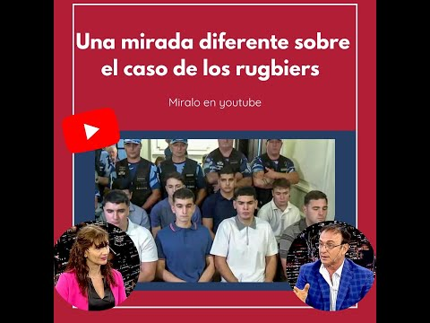

Cada miniatura lleva directo al video original en YouTube. Organizamos el archivo por tema para que sea más fácil de recorrer.
Apariciones de la Dra. Huczek en programas de TV y radio, hablando sobre su trayectoria y su mirada sobre la Justicia.
Análisis de la Dra. Huczek sobre los casos que marcaron la agenda judicial: Báez Sosa, Darthés, Depp c/ Heard y otros.

YouTubeAnálisis de la Dra. Huczek, desde una mirada jurídica, sobre hechos de crimen organizado y violencia en distintos barrios de Argentina.
Análisis sobre política migratoria, ciudadanía y casos de fraude vinculados a trámites de nacionalización.
Columnas de análisis jurídico sobre temas de fondo: juicio por jurados, abuso sexual y derecho comparado.
Un abogado del estudio te responde dentro de las 24 horas hábiles.